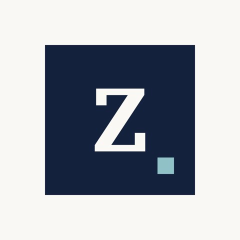

Advisory
Zopounidis Analytics & Advisory
Business analytics and data science advisory. Decision-support models, performance measurement frameworks and analytical tools for organisations in infrastructure, utilities, finance and tourism.
Visit ZAA →